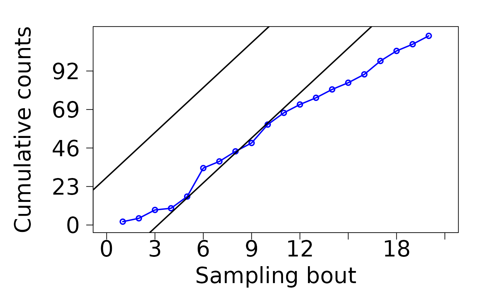
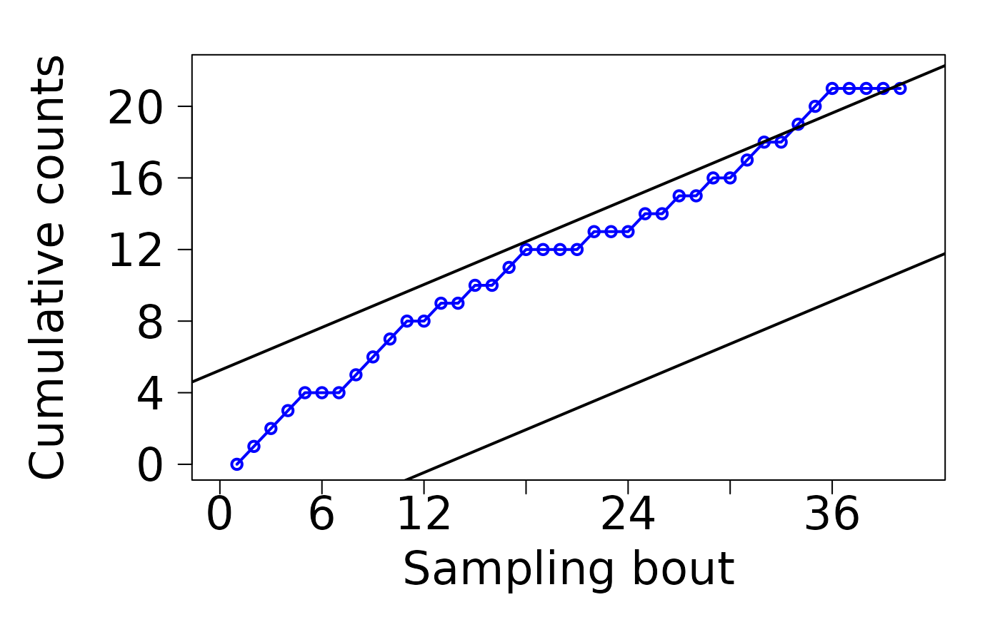

Sequential testing of hypotheses about population density with the `sequential.pops` package
Source:vignettes/Seq-vignette.Rmd
Seq-vignette.RmdIntroduction
The sequential.pops package is designed to simplify the
development, evaluation and analysis of sequential designs for testing
hypotheses about population density. Sequential analyses are
particularly useful for decision-making in situations where estimation
is not the goal, but where critical actions should be triggered if
population sizes reach or are above or below predefined levels. This
situations include deciding whether a pest control action should be
applied, whether an area should be declared free from an invasive
species, or whether early capture numbers of a pest are consistent with
an outbreak. Sequential analyses can also be useful in fields outside
ecology and pest management, such as quality control, fraud detection
and adaptive clinical trials, but those applications are out of the
scope of this package.
Sequential data come in sampling bouts over time that should be
processed as they come to evaluate one or several hypotheses and stop
collecting data (sampling) when there is enough evidence to make a
decision. Sequential designs are typically more cost-efficient than
conventional fixed-sample-size approaches, and can be purely sequential
(one-at-a-time) or group sequential (n > 1 per sampling
bout). The analysis of biological population densities is often carried
out by collecting count data from traps or field observations or
binomial records from structured clusters of sampling units. The
sequential.pops package focuses on count and binomial data
with or without overdispersion to test hypotheses about non-negative
population sizes.
There are other R packages that deal with sequential designs. Most
existing packages, such as GroupSeq, Grpseq,
gsbDesign and seqmon, focus on adaptive
clinical trials for normally distributed variables. Others, such as
gscounts, gsDesign, ASSISTant,
Sequential and BayesOrdDesign can take
non-normal variables but are also focused on clinical trials and can
hardly be adapted to process count or binomial data from ecological or
agricultural settings and evaluate hypotheses about population
densities. Other packages with a more general scope, such as
MSPRT and sprtt, include a limited selection
of probability distributions and lack functions to evaluate tests’
operating characteristics.
The sequential.pops is the first R package devoted to
test hypotheses on biological population densities. Two approaches are
included: the Sequential Test of Bayesian Posterior Probabilities (STBP)
(Rincon et al. 2025), and the Sequential Probability Ratio Test (SPRT)
(Wald 1945). Both the STBP and the SPRT have their own pros and cons but
are the most popular and state-of-the-art approaches for sequential
analyses in ecology and pest management. This tutorial walks you through
the development, evaluation and analysis of sequential designs with STBP
and SPRT using the sequential.pops package.
1. The Sequential Test of Bayesian Posterior Probabilities
This test is specifically designed to test hypotheses about population densities, although it may have applications in other fields. It works by sequentially updating the conditional probability of the hypothesis being tested as new data is processed. The two main benefits of using STBP is that is distribution-agnostic (works with virtually any probability distribution), and that is one of the few sequential analyses that is “likelihood ratio-free” meaning that it can test single hypotheses without having to specify a non-complementary alternative. As we’ll see later, most sequential tests, such as the SPRT (section 2), require two hypotheses, rather than one, because they are based on likelihood ratios. Another advantage of the STBP is that it can process purely sequential (one-at-a-time) or group sequential (in batches of samples), balanced or unbalanced, and static (single-value) or dynamic (population models) hypotheses without major modifications.
The main disadvantage of the STBP is that it is so new that has not been as tested as its counterparts in the rough streets of real datasets. The STBP is also pretty sensitive to sample sizes within sampling bouts. In theory, it outperforms other sequential analysis as long as several samples are collected within each sampling bout, but type I error rate (accepting H when is false) gets ugly in purely sequential designs.
Example 1: Testing species absence
Let’s start with a simple case in which one wants to test the hypothesis that certain species is absent in sampled area. As Carl Sagan said “the absence of evidence is not evidence of absence”. In other words, we can never be sure about the absence of an species in an area, but we can calculate the probability of the species being absent given the collected data.
Most small population sizes, like those of recently introduced
species, are well described by Poisson distributions. So, in this case,
we want to test if H: mu = 0 assuming random sampling and
counts following a Poisson distribution. If we are lucky and can collect
say 30 random samples each time, and they all result in absences
(zeros), we should be able to track the (posterior) probability of H
being true after each sampling bout of 30.
Data structure in sequential.pops for counts is based on
matrices, where columns represent time (sampling bouts) and rows samples
within bouts. So, for example, if we have collected 4 sampling bouts
each with 30 samples, data should be arranged in a 30 x 4
matrix. In this case, we have all zeros:
a30 <- matrix(rep(0, 120), 30, 4)
head(a30, 3) # only first three rows out of 30 are shown
#> [,1] [,2] [,3] [,4]
#> [1,] 0 0 0 0
#> [2,] 0 0 0 0
#> [3,] 0 0 0 0To run the test, we use stbp_simple, which is specially
designed to test hypotheses about species absence, so we do not need to
specify the hypothesis. We do need to provide the matrix with the
data, the distribution family (as a character string) in
density_func, the initial prior probability
(often 0.5), and upper_criterion and
lower_criterion, the upper and lower criteria to stop
sampling and make a decision. The argument upper_bnd is
almost always Inf, since it represents the upper limit of
the parameter space for mu.
library(sequential.pops)
test30 <- stbp_simple(data = a30,
density_func = "poisson",
prior = 0.5,
upper_bnd = Inf,
lower_criterion = 0,
upper_criterion = 0.9999)
test30
#>
#> Sequential test of Bayesian posterior probabilities
#> Family: poisson
#> H: mu = 0
#> Probability: 0.99996 from 3 sampling bouts
#> Recommendation based on provided criteria: accept HGiven that all samples are zero and assuming a completely efficient
detection rate, we can say that after 3 sampling bouts of 30 samples
there is a pretty high change that H: mu = 0 is true. How
spaced in time sampling bouts should be depends on the species being
sampled and on what we consider a different sampling time.
Notice that upper_criterion and
lower_criterion are set close to 1 and 0, respectively. In
reality, to test species absence, only upper_criterion is
important to minimize type II error, since the posterior probability of
H will become 0 as soon as we get the first detection
(data > 0).
If sample size within sampling bouts is reduced, we should expect to loose power and require more bouts to collect enough evidence to achieve similar levels of certainty that the species is absent (in case we keep getting zeros, of course). So, if we can only collect 3 samples per sampling bout, and we get all zeros the matrix with the data should be specified as:
a3 <- matrix(rep(0, 30), 3, 10)
a3
#> [,1] [,2] [,3] [,4] [,5] [,6] [,7] [,8] [,9] [,10]
#> [1,] 0 0 0 0 0 0 0 0 0 0
#> [2,] 0 0 0 0 0 0 0 0 0 0
#> [3,] 0 0 0 0 0 0 0 0 0 0for 10 sampling bouts. After running the test with:
test3 <- stbp_simple(data = a3,
density_func = "poisson",
prior = 0.5,
upper_bnd = Inf,
lower_criterion = 0,
upper_criterion = 0.9999)
test3
#>
#> Sequential test of Bayesian posterior probabilities
#> Family: poisson
#> H: mu = 0
#> Probability: 0.99995 from 9 sampling bouts
#> Recommendation based on provided criteria: accept Hwe can see that we now require 9 sampling bouts to achieve similar
levels of confidence to declare that our species is absent from the
sampled area. The number of bouts with all zeros required to accept H
keeps increasing as sampling size within bouts is reduced. In fact, when
sample size is one (purely sequential), the test looses power and the
posterior remains unchanged regardless the number of bouts. You can
check the progression of the posterior probabilities for different
sample sizes by calling plot, for the sequential design
with 30 samples:
plot(test30)
and for the sequential design with 3 samples:
plot(test3)Example 2: Testing if a population is above a static threshold
The STBP can also assist in situations where one wants to test if a
given population is above or below a relevant threshold for management.
This is useful to determine, for example, if a pest population has
reached an economic threshold or if an endangered species is below the
Allee threshold. For the remaining of this tutorial, we will focus on
hypotheses about populations being above a threshold, but the
procedure is similar for hypotheses with the opposite direction. In fact
this is specified through a single argument in the function
stbp_composite.
For this example, we will use the case study of the tomato leafminer in greenhouse tomatoes (Rincon et al. 2021). The tomato leafminer is a significant pest of tomatoes but prefers mostly to feed on leaves where damage is minimum and will only turn to fruits when population density increases. The economic threshold varies depending on whether tomato fruits are present or not, but for now let’s assume the threshold is static (constant) at 9 larvae per plant and we want to test through sequential sampling if a population has exceeded such threshold.
When population densities are not so small, chances are that the Poisson distribution is no longer appropriate to describe counts and that a probability distribution a that allow for overdispersion (or aggregation) is required. As populations increase, very often they aggregate in clusters which increase the dispersion of the data to levels that are not accounted for by the Poisson. This is the case for the tomato leafminer, so the STBP should be defined with a negative binomial distribution and some specification for the dispersion, which is obtained from studies of the counts observed in the field. For more details about how to conduct these studies the reader is referred to textbooks like Binns et al. (2000).
Let’s start by generating some negative binomial data in a purely
sequential design (n = 1 per sampling bout):
counts1 <- rnbinom(20, mu = 5, size = 4.5)
counts1
#> [1] 7 3 9 3 4 4 4 4 6 3 4 3 5 1 4 5 2 9 4 1This is 20 random counts from a population of 5 larvae per sample
unit (plant) in size that follows a negative binomial distribution with
an overdispersion of 4.5. We can now build a test for the hypothesis of
H: mu > 9 larvae per plant with:
test_counts1 <- stbp_composite(data = counts1,
greater_than = TRUE,
hypothesis = 9,
density_func = "negative binomial",
overdispersion = 4.5,
prior = 0.5,
lower_bnd = 0,
upper_bnd = Inf,
lower_criterion = 0.01,
upper_criterion = 0.99)
test_counts1
#>
#> Sequential test of Bayesian posterior probabilities
#> Family: negative binomial
#> H: mu > 9
#> Probability: 0.00548 from 11 sampling bouts
#> Recommendation based on provided criteria: reject HNotice that this time we use the function
stbp_composite, which is designed to test threshold-style
hypotheses. The direction of the hypothesis (whether is “greater than”
or “less than”) is controlled by the argument greater_than
and the threshold is included in the argument hypothesis.
lower_bnd and upper_bnd are the parameter
space boundaries for the hypothesis, mu, and is almost
always 0 and Inf, respectively.
lower_criterion and upper_criterion are the
posterior probabilities above or below which a decision is made.
Many times, however, overdispersion is not this simple and should be
specified as a function of the mean, rather than as a constant. This is
the case for most animal and plant populations because overdispersion is
highly tied to the variance, and variance of population counts tends to
increase exponentially with the mean. There are several ways to
empirically describe variance (and overdispersion) as a function of the
mean, but the most popular one is Taylor’s Power Law. In the
sequential.pop package, you can use whatever function you
want, as it just must be specified before running the test. For example,
the Taylor’s Power Law parameters that describe the variance-mean
relationship of tomato leafminer counts are a = 1.83 and
b = 1.21, so overdispersion, k, is given
by:
estimate_k <- function(mean) {
a = 1.83
b = 1.21
(mean^2) / ((a * mean^(b)) - mean)
}we can also incorporate more realistic values of overdispersion to
the generated counts by including estimate_k in the count
generation function:
counts1a <- rnbinom(20, mu = 5, size = estimate_k(5))
counts1a
#> [1] 10 6 10 12 2 4 10 6 0 5 5 4 3 2 1 10 5 2 4 4and the test can be specified as:
test_counts1a <- stbp_composite(data = counts1a,
greater_than = TRUE,
hypothesis = 9,
density_func = "negative binomial",
overdispersion = "estimate_k",
prior = 0.5,
lower_bnd = 0,
upper_bnd = Inf,
lower_criterion = 0.01,
upper_criterion = 0.99)
test_counts1a
#>
#> Sequential test of Bayesian posterior probabilities
#> Family: negative binomial
#> H: mu > 9
#> Probability: 0.00949 from 11 sampling bouts
#> Recommendation based on provided criteria: reject Hthe overdispersion function is specified as a character string with the function name which must be added to the R environment before running the test. Although it is not the case for this instance of randomly generated numbers, there are noticeable gains in efficiency (fewer average number of sampling bouts to make a decision) and accuracy (less bad decisions) when an appropriate the overdispersion function is included as part of a STBP (Rincon et al. 2025).
As with stbp_simple you can call plot to
visualize the change in posterior probabilities with sequential sampling
bouts for stbp_composite tests. For the test with a
constant overdispersion:
plot(test_counts1)and with overdispersion as a function of the mean:
plot(test_counts1a)Sometimes data on populations do not come in counts but as binary
outcomes when sampling units are evaluated as presence/absence or
infested/uninfected, for example. For those cases,
stbp_composite is equipped with binomial and
beta-binomial options for the argument
density_func. Like count data, the selection of one or the
other depends on whether there is overdispersion in the data, with
beta-binomial being the option for overdispersed binomial
variables. For these kind of data, two pieces of information are
required from each sample unit: the number of successes (e.g., present
or infected) and the total number of samples from which observations
where made. For this reason, data for binomial variables should be
structured as a list() of n x 2 matrices,
where each matrix corresponds to a sampling bout, and n is
the number of sample units (clusters of samples examined). The number of
successes must be included in column 1 and the number of samples in
column 2 of each matrix.
For example, if a sequential sampling is designed to collect 3 clusters (sampling units) each made of 10 samples and 7 sampling bouts have been collected data should be introduced like:
library(emdbook) # for rbetabinom()
binom1 <- list()
for(i in 1: 7) {
binom1[[i]] <- matrix(c(emdbook::rbetabinom(3, prob = 0.2,
size = 10,
theta = 6.5), rep(10, 3)), 3, 2)
}
head(binom1, 3) # only first three sampling bouts out of seven are shown.
#> [[1]]
#> [,1] [,2]
#> [1,] 1 10
#> [2,] 0 10
#> [3,] 1 10
#>
#> [[2]]
#> [,1] [,2]
#> [1,] 2 10
#> [2,] 6 10
#> [3,] 0 10
#>
#> [[3]]
#> [,1] [,2]
#> [1,] 0 10
#> [2,] 6 10
#> [3,] 6 10The data generated in the list binom1 is overdispersed
with a constant overdispersion parameter, theta and mean
incidence of prob = 0.2. All the required support to work
with the beta-binomial distribution is in the emdbook
package, so it must be loaded before running any sequential tests that
involve this distribution. The STBP can be run on the data
binom1 with:
test_bin1 <- stbp_composite(data = binom1,
greater_than = TRUE,
hypothesis = 0.15,
density_func = "beta-binomial",
overdispersion = 6.5,
prior = 0.5,
lower_bnd = 0,
upper_bnd = 1,
lower_criterion = 0.001,
upper_criterion = 0.999)
test_bin1
#>
#> Sequential test of Bayesian posterior probabilities
#> Family: beta-binomial
#> H: mu > 0.15
#> Probability: 0.99999 from 4 sampling bouts
#> Recommendation based on provided criteria: accept Hwhere the STBP correctly infers that the data in binom1
is consistent with H: mu > 0.15. Like overdispersed
count data, overdispersion for binomial data can also be included as a
function of mean proportion (sometines called incidence). Again, the
overdispersion model is derived from the variance-mean
(variance-incidence) relationship, and the most popular form is the one
provided by Madden et al. (2007), although the
sequential.pops package allows you to pick whatever
function you want. The function that describes overdispersion,
theta, as a function of the mean proportion for the tomato
leafminer is defined as (Madden et al. 2007):
estimate_theta <- function(mean) {
A = 780.72
b = 1.61
R = 10
(1 / (R - 1)) * (((A * R^(1 - b))/ ((mean * (1 - mean))^(1 - b))) - 1)
}where A and b are parameters from the
variance-incidence model and R is the number of samples in
each sampling unit (cluster). We can generate a new binomial dataset
that includes variable overdispersion:
binom2 <- list()
for(i in 1: 7) {
binom2[[i]] <- matrix(c(rbetabinom(3, prob = 0.2,
size = 10,
theta = estimate_theta(0.2)),
rep(10, 3)), 3, 2)
}
head(binom2, 3) # only first three sampling bouts out of seven are shown.
#> [[1]]
#> [,1] [,2]
#> [1,] 1 10
#> [2,] 2 10
#> [3,] 1 10
#>
#> [[2]]
#> [,1] [,2]
#> [1,] 3 10
#> [2,] 4 10
#> [3,] 1 10
#>
#> [[3]]
#> [,1] [,2]
#> [1,] 2 10
#> [2,] 4 10
#> [3,] 2 10and then we can specify and run a STBP as:
test_bin2 <- stbp_composite(data = binom2,
greater_than = TRUE,
hypothesis = 0.15,
density_func = "beta-binomial",
overdispersion = "estimate_theta",
prior = 0.5,
lower_bnd = 0,
upper_bnd = 1,
lower_criterion = 0.001,
upper_criterion = 0.999)
test_bin2
#>
#> Sequential test of Bayesian posterior probabilities
#> Family: beta-binomial
#> H: mu > 0.15
#> Probability: 0.99935 from 3 sampling bouts
#> Recommendation based on provided criteria: accept HNotice that the argument upper_bnd in the tests
test_bin1 and test_bin2 is set to 1, rather
than Inf like in the tests that processed counts,
test_counts1 and test_counts1a. This is
because the parameter space of population density, mu, for
binomial data is [0, 1] but it is [0, Inf] for
count data.
Test evaluation
The sequential.pops package is equipped with tools to
evaluate the accuracy and efficiency of specifications for the STBP. For
a perfectly accurate sequential test, the acceptance rates of H:
mu > psi are zero when the true population is < psi
and 1 when it is > psi, with a minimum (efficient) average number of
samples. Thus, the evaluation of STBP involves the analysis of the
proportion of times H is accepted across a range of true population
densities and the corresponding number of sampling bouts required to
make a decision. Sometimes these analyses are called “operating
characteristics”.
All you need to run an evaluation of a STBP is a STBP
object, which is created every time a test is run through
stbp_composite, an evaluation range, which is a sequence of
population densities over which the evaluation is to be performed, and
the sample size within bouts. You can add additional levels of
sophistication by playing with the initial prior probability or by
adding stochasticity to the overdipersion parameter, in case you are
using one.
To demonstrate the evaluation of STBP we will use the
STBP objects created above. The simplest one is
test_counts1, which is a purely sequential design that
tests H: mu > 9 with constant overdispersion of
k = 4.5. For the evaluation, the only relevant information
that is extracted from test_counts1 has to do with the test
specification, and the data is not really used. To run evaluation of
test_counts1 we call the function
STBP.eval:
eval1 <- STBP.eval(test_counts1,
eval.range = seq(3, 12),
n = 1,
prior = 0.5,
N = 20)
eval1
#> $AvgSamples
#> [1] 4.05 5.60 9.75 14.05 10.20 7.95 6.15 5.70 3.95 3.15
#>
#> $AcceptRate
#> [1] 0.00 0.00 0.05 0.50 0.85 1.00 1.00 1.00 1.00 1.00Notice that the evaluation range of true population densities
(eval.range) includes psi, the threshold (hypothesis),
because we are particularly interested in examining the behavior of the
test when population size is close the threshold. Also, that the purely
sequential approach was kept for this analysis (n = 1), but
we could also try other samples sizes. The argument N is
the number of simulations run for each true population size. In this
case is 20, so a total of 200 simulations were run
(20 * length(seq(3, 12))), which is pretty small for a
formal analysis. You should run, at least, 1000 simulation per
population size in more formal test.
The output of STBP.eval is a list() with
two vectors: $AvgSamples and $AcceptRate. Both
have as many elements as length(eval.range) and the first
is the mean number of sampling bouts required to make a decision about H
and the second is the proportion of simulation runs that resulted in
acceptance of H. Both can be visualized across the evaluated range of
true population densities to the test performance around the threshold
of 9:
plot(seq(3, 12), eval1$AvgSamples, type = "o", xlab = "True population size",
ylab = "Average number of bouts")
abline(v = 9, lty = 2)
plot(seq(3, 12), eval1$AcceptRate, type = "o", xlab = "True population size",
ylab = "Acceptance rate of H")
abline(v = 9, lty = 2)There is an argument in the STBP.eval function called
overdispersion.sim that was omitted in eval1.
Through overdispersion.sim, you can specify overdispersion
functions or values different from those specified in the test. So, in
eval1, the overdispersion used to run the simulations was
the same as in the test test_counts1. However, more
realistic test evaluations can be performed if (1) varying
overdispersion is included and (2) stochasticity about the variance-mean
relationship is considered. The first can either be specified in the
model (as in test_counts1a or in test_bin2) or
directly in STBP.eval through
overdispersion.sim, in case is not in the model.
To add stochasticity, however, you should declare a new
overdispersion function with allowance for variability. This new
function is similar to the one used for the models but includes a random
normal variable with mean = 0 and standard deviation
sd as a new factor. Conventionally, sd is the
square root of the mean square error for the regression used to fit the
variance-mean model: Taylor’s Power Law, for count data, and Madden’s
model for binomial data (Binns et al. 2000).
For example, if we want to add stochasticity to the evaluation of
model test_counts1a, we should incorporate a normal random
variable in function estimate_k by:
estimate_k_stoch <- function(mean) {
a = 1.83
b = 1.21
RMSE = 0.32
(mean^2) /
((a * mean^(b) * exp(truncdist::rtrunc(1, "norm",
a = log(1 / (a * mean^(b - 1))),
b = Inf,
mean = 0,
sd = RMSE)))
- mean)
}Notice that estimate_k_stoch is similar to
estimate_k except that the former includes the exponential
of a normal random variable as a factor in the denominator. Here we use
a truncated normal distribution, form the truncdist
package, to prevent zero denominators or negative values for
k, but you can also use rnorm and a different
alternative to stay away from undefined or negative values for the
overdispersion parameter. To run the evaluation including stochasticity,
we just specify estimate_stoch as a character string in the
argument overdispersion.sim.
eval1a <- STBP.eval(test_counts1,
eval.range = seq(3, 12),
n = 1,
prior = 0.5,
overdispersion.sim = "estimate_k_stoch",
N = 20)
eval1a
#> $AvgSamples
#> [1] 3.40 5.50 7.65 11.40 12.50 6.20 6.50 4.30 4.10 3.35
#>
#> $AcceptRate
#> [1] 0.05 0.00 0.20 0.40 0.75 0.85 1.00 1.00 1.00 1.00Test evaluation is a useful tool to compare different sequential analysis approaches, but it can also be useful to calibrate sample size, decision criteria or the impact of (incorrect) initial priors of sequential designs. For example, you can compare both accuracy and efficiency of tests with different sample sizes within bouts.
eval3a <- STBP.eval(test_counts1,
eval.range = seq(3, 12),
n = 3,
prior = 0.5,
overdispersion.sim = "estimate_k_stoch",
N = 20)
eval6a <- STBP.eval(test_counts1,
eval.range = seq(3, 12),
n = 6,
prior = 0.5,
overdispersion.sim = "estimate_k_stoch",
N = 20)Here eval3a includes not 1 but 3 samples per sampling
bout and eval6a includes 6 samples. We can now visualize
how sample size within bouts affects both accuracy and efficiency:
plot(seq(3, 12), eval1a$AvgSamples, type = "o", xlab = "True population size",
ylab = "Average number of bouts")
points(seq(3, 12), eval3a$AvgSamples, type = "o", pch = 19)
points(seq(3, 12), eval6a$AvgSamples, type = "o", pch = 0)
abline(v = 9, lty = 2)
plot(seq(3, 12), eval1a$AcceptRate, type = "o", xlab = "True population size",
ylab = "Acceptance rate of H")
points(seq(3, 12), eval3a$AcceptRate, type = "o", pch = 19)
points(seq(3, 12), eval6a$AcceptRate, type = "o", pch = 0)
abline(v = 9, lty = 2)This very limited analysis (only 20 simulations per population density) shows that sample sizes of 3 (filled circles) and 6 (empty squares) outperform in accuracy and efficiency a purely sequential design (empty circles). Some gains in accuracy can be achieved by increasing sample size from 3 to 6.
Test evaluation is similar for binomial data, except that the
evaluation range is on the [0, 1] interval. The analog of
estimate_k_stoch for the binomial world for the tomato
leafminer examples is defined as (Binns et al. 2000):
estimate_theta_stoch <- function(mean) {
A = 780.72
b = 1.61
R = 10
RMSE = 0.41
((1 / (R - 1)) * (((A * R^(1 - b) *
exp(rnorm(1, mean = 0, sd = RMSE))) / ((mean * (1 - mean))^(1 - b))) - 1))
}Now, we can run a similar analysis to compare sample sizes for a
binomial design. One important difference between binomial and count
sampling is that sample sizes for binomial designs typically require
more samples, although they are quicker and easier to examine.
Simulations within STBP.eval con only consider binomial
sampling with sample units or clusters made of a single observation
(size = 1). So, within STBP.eval,
n = 1 means a single presence/absence or
infected/uninfected observation. To compensate, the argument
n in STBP.eval should reflect the total number
of observations considering all the clusters. For example, if you plan
to design a binomial sequential sampling with three clusters each of 10
observations (samples), sample size for evaluation should be set to 30,
n = 30. Here we test 10, 20 and 30 total observations.
evalB10 <- STBP.eval(test_bin2,
eval.range = seq(0.01, 0.25, 0.02),
n = 10,
prior = 0.5,
overdispersion.sim = "estimate_theta_stoch",
N = 20)
evalB20 <- STBP.eval(test_bin2,
eval.range = seq(0.01, 0.25, 0.02),
n = 20,
prior = 0.5,
overdispersion.sim = "estimate_theta_stoch",
N = 20)
evalB30 <- STBP.eval(test_bin2,
eval.range = seq(0.01, 0.25, 0.02),
n = 30,
prior = 0.5,
overdispersion.sim = "estimate_theta_stoch",
N = 20)Notice that the evaluation range are proportions on
[0.01, 0.25], excluding 0 to avoid warnings,
and considering that H was set to H: mu > 0.15 in
test_bin2. We can also visualize acceptance rate of H and
average number of bouts across true incidences:
plot(seq(0.01, 0.25, 0.02), evalB10$AvgSamples, type = "o", xlab = "True incidence",
ylab = "Average number of bouts")
points(seq(0.01, 0.25, 0.02), evalB20$AvgSamples, type = "o", pch = 19)
points(seq(0.01, 0.25, 0.02), evalB30$AvgSamples, type = "o", pch = 0)
abline(v = 0.15, lty = 2)
plot(seq(0.01, 0.25, 0.02), evalB10$AcceptRate, type = "o", xlab = "True incidence",
ylab = "Acceptance rate of H")
points(seq(0.01, 0.25, 0.02), evalB20$AcceptRate, type = "o", pch = 19)
points(seq(0.01, 0.25, 0.02), evalB30$AcceptRate, type = "o", pch = 0)
abline(v = 0.15, lty = 2)Again, this is a very limited analysis made of only 20 simulations
per true incidence. However, it shows how the number of bouts required
to make a decision decreases with sample size, with designs with 10
samples (empty circles) struggling to make quick decision when incidence
is far from the the threshold of 0.15, compared with sample sizes of 20
(filled circles) and 30 (empty squares). Accuracy is also affected by
sample size with n = 20 and n = 30 producing
less incorrect decisions, particularly when the true incidence is below
the threshold.
Example 3: Testing if a population is above a dynamic threshold
Sometimes hypotheses about population densities are not single numbers, but entire population trajectories. This is the case when monitoring programs are designed to track a target population over time and decide as early as possible whether a management action is necessary to prevent an outbreak. Population models often assist the prediction of densities over time based on current densities and growth rates, so the profile of population dynamics that result in problematic population sizes is often known.
An example with real data is presented by Rincon et al. (2025). Here
we use the logistic population growth model, pop.outB, to
make up an outbreak population trajectory of 20 weekly population
densities that results in densities that cannot be tolerated. We will
call such trajectory OB_pop <- pop.outB(t = seq(1, 20)),
where t is given in weeks.
pop.outB <- function(t) {
N0 = 15
K = 90
r = 0.25
K / (1 + (K / N0 - 1) * exp(-r * t))
}
OB_pop <- pop.outB(t = seq(1, 20))
plot(seq(1, 20), OB_pop, xlab = "Time (weeks)",
ylab = "Population density", lwd = 2, type = "o", pch = 19)The goal is to determine, with the fewest possible number of sampling
bouts collected over time, if a sampled population is consistent with
one equivalent or greater than pop.outB. One complication
that the threshold here is a moving target and the differences between
outbreak and non-outbreak population configurations during the first few
weeks (when we want to make an informed decision) are often tiny, but
tend to amplify over time. Thus, the test should be able to detect those
early tiny differences and produce correct early warnings.
Every cycle/season the population may behave differently but we can use the outbreak configuration as a reference to quantify how severe they are. For example, non-outbreaks are a portion of the outbreak, and very bad seasons/cycles could even take larger population sizes than a the reference outbreak. We can produce several variants of population trajectories based on the outbreak:
plot(seq(1, 20), OB_pop, ylim = c(0, 95), type = "o",
lwd = 2, ylab = "Population size", xlab = "Time (weeks)", pch = 19)
points(seq(1, 20), OB_pop * 0.9, type = "o")
points(seq(1, 20), OB_pop * 0.7, type = "o", pch = 0)
points(seq(1, 20), OB_pop * 0.5, type = "o", pch = 2)
points(seq(1, 20), OB_pop * 1.1, type = "o", pch = 5)The trajectory in bold is the outbreak population configuration,
OB_pop, and the rest are outbreak and non-outbreak
variants. The pattern with triangles is a configuration of 50% of an
outbreak, the one with squares one of 70% of an outbreak, circles 90% of
an outbreak, and diamonds represents one that surpasses the outbreak by
10%. Modeling variants using the outbreak as a reference (with
proportions) is more realistic than varying single parameters in the
pop.outB function, since there are multiple mechanisms that
drive simultaneously outbreak severity. As we’ll see below, the
evaluation range to evaluate STBP for dynamic thresholds in
STBP.eval is provided as factors of the threshold
trajectory.
Like for static hypotheses, data for dynamic hypotheses come in sequential bouts of counts or proportions with or without overdispersion, and the data is structured in the same way. The only difference is that true density varies over time according to the population model. For example, data collected sequentially in bouts of 10 samples each on a population that is 70% of an outbreak ca be generated as:
pop70 <- OB_pop * 0.7
count70 <- matrix(NA, 10, 20)
for(i in 1:20){
count70[, i] <- rnbinom(10, mu = pop70[i], size = estimate_k(pop70[i]))
}
head(count70, 3) # only first three samples out of ten are shown
#> [,1] [,2] [,3] [,4] [,5] [,6] [,7] [,8] [,9] [,10] [,11] [,12] [,13] [,14]
#> [1,] 10 18 15 18 28 36 24 17 31 52 34 58 52 43
#> [2,] 11 14 25 20 10 24 39 37 42 38 50 74 34 88
#> [3,] 21 17 19 42 19 16 27 39 50 35 61 42 56 37
#> [,15] [,16] [,17] [,18] [,19] [,20]
#> [1,] 59 69 67 60 41 53
#> [2,] 53 45 47 61 28 69
#> [3,] 50 54 58 87 75 75Notice that we are using the same negative binomial specification of
example 2, with varying overdispersion described with the function
estimate_k, but a constant overdispersion could also be
used. We can visualize the sample means per sampling bout (means across
columns of counts70) along with the outbreak trajectory,
OB_pop:
plot(seq(1, 20), OB_pop, ylim = c(0, 95), type = "o",
lwd = 2, ylab = "Population size", xlab = "Time (weeks)", pch = 19)
points(seq(1, 20), colMeans(count70), type = "o")To run the test on count70, we only have to specify the
outbreak trajectory (not the function) in the hypothesis
argument of stbp_composite:
test_dyn <- stbp_composite(data = count70,
greater_than = TRUE,
hypothesis = OB_pop,
density_func = "negative binomial",
overdispersion = "estimate_k",
prior = 0.5,
lower_bnd = 0,
upper_bnd = Inf,
lower_criterion = 0.001,
upper_criterion = 0.999)
test_dyn
#>
#> Sequential test of Bayesian posterior probabilities
#> Family: negative binomial
#> H: mu > Trajectory = OB_pop
#> Probability: 0.00011 from 2 sampling bouts
#> Recommendation based on provided criteria: reject HThe STBP rejects H: trajectory mu > trajectory OB_pop
after only two bouts. The procedure to test dynamic hypotheses with
binomial data is similar, except that trajectories should be provided as
proportions (incidence) and data should be structured as
list() of matrices with column 1 with successes and column
2 with samples.
Test evaluation
STBP for dynamic hypotheses can be evaluated the same way as tests
for static hypotheses. The only difference is that
eval.range is provided as factors of the threshold
trajectory. For example, for test_dyn, the evaluation is
run on data generated for a range of percentages of
OB_pop = pop.outB(seq(1, 20)), such as
OB_pop * 0.5 for 50% an outbreak, OB_pop * 0.7
for 70% an outbreak, or OB_pop * 1.2 for 20% above
the outbreak. We can refer to these factors as “outbreak
intensities”.
We can visualize the average number of bouts required to make a decision and the acceptance rate of H across true outbreak intensities.
plot(seq(0.2, 1.5, 0.2), eval_dyn$AvgSamples, type = "o", xlab = "True outbreak
intensity", ylab = "Average number of bouts")
abline(v = 1, lty = 2)
plot(seq(0.2, 1.5, 0.2), eval_dyn$AcceptRate, type = "o", xlab = "True outbreak
intensity", ylab = "Acceptance rate of H")
abline(v = 1, lty = 2)The pattern is similar to the one shown for static hypotheses
(example 2). Average sampling bouts peaks at the threshold (outbreak
intensity = 1) where decision-making is toughest and more samples are
required to distinguish outbreaks from non-outbreaks. Acceptance rate of
H is 0 at low outbreak intensities and reaches 1 above the threshold
(outbreak intensity = 1). Again, the value of this analysis stems from
the ability to check the balance between sampling effort and accuracy
that results from varying decision criteria (arguments
lower_criterion or upper_criterion) and
sampling size within bouts.
2. The Sequential Probability Ratio Test
The SPRT was invented in the context of quality control back in the 40s, but it is widely applied in many fields, including population management and clinical trials. In fact, there are other R packages that implement the SPRT, particularly in the field of clinical trials (see introduction for a list). The SPRT is popular among practitioners of Integrated Pest Management, who are often familiar with the charts with two parallel lines on which cumulative pest counts are overlapped to decide if sampling should continue or if there is enough evidence to stop and decide in favor or against the hypothesis being tested. The SPRT has been extensively tested and it has been shown to be optimal under a restricted range of contexts. The SPRT can be easily implemented even without a calculator just by comparing data with stop lines “on the fly”.
The main difference between STBP and SPRT is philosophical. While
STBP provides recommendations about H based on Bayesian probabilities,
SPRT does so based on likelihood ratios. Bayesian probabilities are
understood as the credibility for H to be true given the data,
and likelihood ratios rely on the frequency in which observations occur
in face of two competing models. For this reason, the decision criteria
for STBP (i.e., arguments lower_criterion and
upper_criterion) are not directly associated with type I
and type II error rates and the stbp_simple and
stbp_composite outputs include the final posterior
probability (credibility) for H. In SPRT, tolerable type I and type II
error rates are explicitly set as part of the test specification and the
final likelihood ratio is not as relevant since the “significance” of
the result is stated from the beginning and provided that one of the two
stop lines has been reached.
One important drawback of the SPRT is that it requires the
specification of two non-related hypotheses. You can’t test a single
hypothesis against its complementary, like in STBP, because the SPRT
requires two simple hypothesis to produce a probability ratio each time
new data come. Also, the SPRT can’t process group sequential data,
unless you use the mean, median or mode and in its conventional form
cannot be used to test dynamic hypotheses. If you want to use SPRT for
dynamic hypotheses, you must use a variation called Time-Sequential
Probability Ratio Test, which is not implemented in the
sequential.pops package yet.
Example 4: Testing if a population is above a threshold
Like other sequential tests, the SPRT assist in situations where one wants to test if a given population is above or below a threshold. The main difference with the STBP is that SPRT is specified with two hypotheses instead of one. There are no rules on how those hypotheses should be stated when you only want to test a single threshold-style hypothesis. Conventionally, they are formulated equidistant from the threshold density, using confidence intervals for the threshold, but there are other approaches.
For this example, we will use once again the case study of the tomato
leafminer in greenhouse tomatoes. Let’s assume again the economic
threshold is static (constant) at 9 larvae per plant and we want to
test, through sequential sampling, if a population has exceeded such
threshold. In the sequential.pops package, the same
probability distributions available for the STBP are also available for
the SPRT, except for the beta-binomial, for which stop lines have not
been derived yet.
Similar to the STBP, distributions without overdispersion (poisson and binomial) are used to test and sample small population sizes. But when population grow they start to aggregate and overdispersion becomes a nuisance that must be accounted for by using appropriate distributions (negative binomial). However, the to specify a SPRT the overdispersion parameter is only used for the threshold density to calculate stop lines. If there a function to obtain reliable values for the overdispersion parameter based on the mean, it can be used for model evaluation to generate more realistic data.
Unlike the STBP, you can specify a SPRT without data, in which case
you’ll get the a chart with the corresponding stop lines as output. For
example, if we want build a test specification for H:
mu > 9 larvae per plant, we have to provide two
hypotheses that allow for the sequential calculation of probability
ratios, so that would be H0: mu = 8 and H1:
mu = 10. We also must provide a probability distribution,
an overdispersion parameter value (in case the distribution is negative
binomial), and tolerable type I (alpha) and type II
(beta) error rates:
sprt(mu0 = 8,
mu1 = 10,
density_func = "negative binomial",
overdispersion = estimate_k(9),
alpha = 0.1,
beta = 0.1)#>
#> Sequential Probability Ratio Test - Stop lines
#> Family: negative binomial
#> H0: mu = 8
#> H1: mu = 10
#>
#> Upper line coefficients:
#> Intercept = 28.45668
#> Slope = 8.93856
#> Lower line coefficients:
#> Intercept = -28.45668
#> Slope = 8.93856Notice that no data have to be provided, and that
overdispersion is not a function but a value specified
through a function for the threshold density of 9 larvae per plant.
Also, notice that the output is a chart with the stop line ready to
contrast with cumulative counts and the coefficients for the stops
lines.
Now let’s generate some data with the same specifications as in
example 2. This is from a negative binomial distribution and the
function estimate_k to obtain overdispersion based on the
mean:
counts1a <- rnbinom(20, mu = 5, size = estimate_k(5))
counts1a
#> [1] 2 2 5 1 7 17 4 6 5 11 7 5 4 5 4 5 8 6 4 5This is 20 random counts from a population of 5 larvae per sample
unit (plant) in size. If we run the function sprt with
data, a SPRT test is performed and a new "SPRT" object is
created.
testPR1 <- sprt(data = counts1a,
mu0 = 8,
mu1 = 10,
density_func = "negative binomial",
overdispersion = estimate_k(9),
alpha = 0.1,
beta = 0.1)
testPR1
#>
#> Sequential Probability Ratio Test
#> Family: negative binomial
#> H0: mu = 8
#> H1: mu = 10
#>
#> Recommendation based on provided criteria: accept H0
#> Number of sampling bouts processed: 9The output is similar to the one generated by the functions
stbp_simple and stbp_composite. In this case,
H0 is accepted, evidence is compatible with a sampled population above
the threshold of 9 individuals per plant. In contrast to
stbp_simple and stbp_composite, the output
from sprt does not provide a probability and the precision
of the final decision relies on the selected values for
alpha and beta. Once again, note that
overdispersion is provided as a value through a function. There is also
a plot method for "SPRT" objects, which
overlap the stop lines with cumulative counts:
plot(testPR1)
In this case, the whole sequence of 20 counts is displayed, but the sampling should have been terminated after the 9th bout when cumulative counts touched the area below the lower stop line. The procedure for binary variables is similar, but cluster sampling (i.e., the ability to collect clusters of samples, like in the STBP) is not allowed. Instead, only 1 and 0 values can be introduced and decisions and based on the cumulative number of 1s across sampling bouts.
For example, binary data collected sequentially for a SPRT is
structured in a vector that can only contain 1 and 0. For example, we
can generate some binary data for a population with mean incidence of
prob = 0.5, without cluster sampling,
size = 1:
binPR <- rbinom(40, prob = 0.5, size = 1)
binPR
#> [1] 0 1 1 1 1 0 0 1 1 1 1 0 1 0 1 0 1 1 0 0 0 1 0 0 1 0 1 0 1 0 1 1 0 1 1 1 0 0
#> [39] 0 0Again, we could get the stop lines in a chart and the corresponding
coefficients to set up a sampling plan for H: mu > 0.4
just by specifying the test as H0: mu = 0.35 vs. H1:
mu = 0.45 and omiting the argument data in the
function sprt:
sprt(mu0 = 0.35,
mu1 = 0.45,
density_func = "binomial",
alpha = 0.1,
beta = 0.1)#>
#> Sequential Probability Ratio Test - Stop lines
#> Family: binomial
#> H0: mu = 0.35
#> H1: mu = 0.45
#>
#> Upper line coefficients:
#> Intercept = 5.251888
#> Slope = 0.3992989
#> Lower line coefficients:
#> Intercept = -5.251888
#> Slope = 0.3992989and run a SPRT for the data in binPR as:
testPR2 <- sprt(data = binPR,
mu0 = 0.35,
mu1 = 0.45,
density_func = "binomial",
alpha = 0.1,
beta = 0.1)
testPR2
#>
#> Sequential Probability Ratio Test
#> Family: binomial
#> H0: mu = 0.35
#> H1: mu = 0.45
#>
#> Recommendation based on provided criteria: accept H1
#> Number of sampling bouts processed: 34In this case, 34 binomial sampling bouts made of a single observation
were required to make a decision between H0 or H1. The object
testPR2 can also be used to produce a chart that compares
stop lines with the cumulative data:
plot(testPR2)
Test evaluation
Like for the STBP, the goal of evaluating SPRT is to check
specifications and adjust to achieve a nice balance between sampling
effort and precision. The procedure and requirements and outputs are
similar. For test evaluation, overdispersion for the negative binomial
can be specified as a function with or without stochasticity. The
evaluation with a constant overdispersion (as is in the model
testPR1) is performed with:
Notice that there is no need to specify once more overdispersion when it is a constant because the same use for the model is used by default. If we wanted to add a function that describes overdipersion with added stochasticity the scrip would be:
evalPR1a <- SPRT.eval(testPR1, eval.range = seq(4, 12),
overdispersion.sim = "estimate_k_stoch",
N = 20)Now we can compare both evaluations, with and without functional description of overdispersion with stochasticity:
plot(seq(4, 12), evalPR1a$AvgSamples, xlab = "True population size",
ylab = "Average number of bouts", type = "o")
points(seq(4, 12), evalPR1$AvgSamples, type = "o", pch = 2)
abline(v = 9, lty = 2)
plot(seq(4, 12), evalPR1a$AcceptRate, xlab = "True population size",
ylab = "Acceptance rate of H1", type = "o")
points(seq(4, 12), evalPR1$AcceptRate, type = "o", pch = 2)
abline(v = 9, lty = 2)Notice the the evaluation for SPRT is performed on the acceptance
rate for H1. As mentioned above, the addition of realistic descriptions
of overdispersion across count of binomial data provides a more
realistic expectation for the test when applied to real data. In the
figures produced above, triangles denote the evaluation assuming
constant overdispersion and circles with varying overdispersion and
added stochasticity. Although this is based on far too few simulations
(N = 20), it shows that simulations that omit the varying
nature of overdispersion underestimate the number of sampling bouts
required to make a decision and the rate of incorrect decisions,
specially when the true population size is above the threshold.
Evaluation of tests with binomial data is similar:
evalPR2 <- SPRT.eval(testPR2, eval.range = seq(0.1, 0.8, 0.1), N = 20)
plot(seq(0.1, 0.8, 0.1), evalPR2$AvgSamples, xlab = "True incidence",
ylab = "Average number of bouts", type = "o")
abline(v = 0.4, lty = 2)
plot(seq(0.1, 0.8, 0.1), evalPR2$AcceptRate, xlab = "True incidence",
ylab = "Acceptance rate of H1", type = "o")
abline(v = 0.4, lty = 2)Although binomial sampling is quicker and easier, it requires significantly more samples than count sampling and precision is often compromised too. However, binomial sampling can be a good alternative when the threshold population density is small [see Binns et al. (2000) for a discussion].
Wishlist for future versions
- Implement cluster sampling in eval
- Include time-sequential probability ratio test for dynamic thresholds
- Implement cluster sampling for SPRT
- Protocol to run eval functions faster with parallel computing
Cited literature
Binns, M.R., Nyrop, J.P. & Werf, W.v.d. (2000) Sampling and monitoring in crop protection: the theoretical basis for developing practical decision guides. CABI Pub., Wallingford, Oxon, UK; New York, N.Y (USA). 284pp.
Madden, L. V., Hughes, G., & Bosch, F.v.d. (2007). The study of plant disease epidemics. American Phytopathological Society. St. Paul, MN (USA). 421pp.
Rincon, D.F., McCabe, I. & Crowder, D.W. (2025) Sequential testing of complementary hypotheses about population density. Methods in Ecology and Evolution. https://doi.org/10.1111/2041-210X.70053
Wald, A. (1945) Sequential Tests of Statistical Hypotheses. The Annals of Mathematical Statistics 16(2): 117-186.